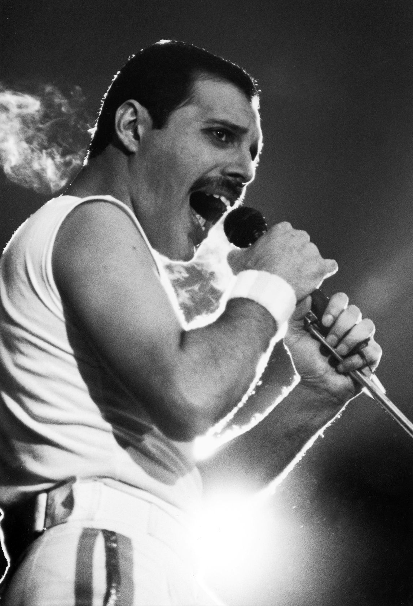
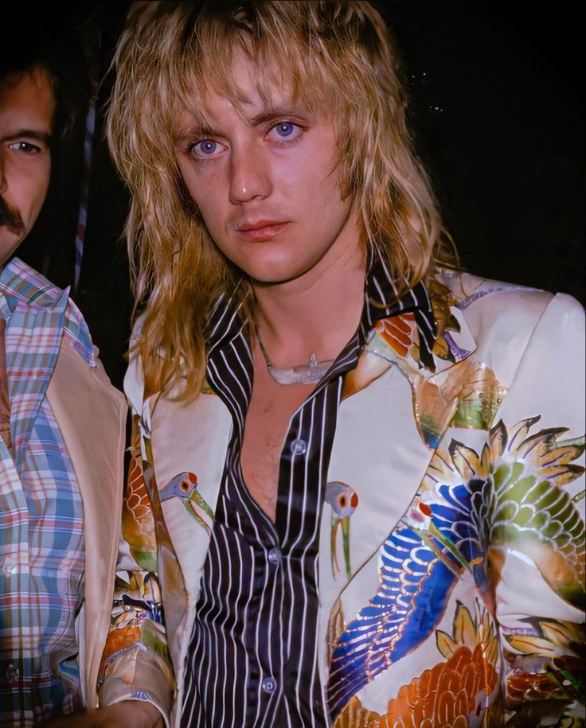
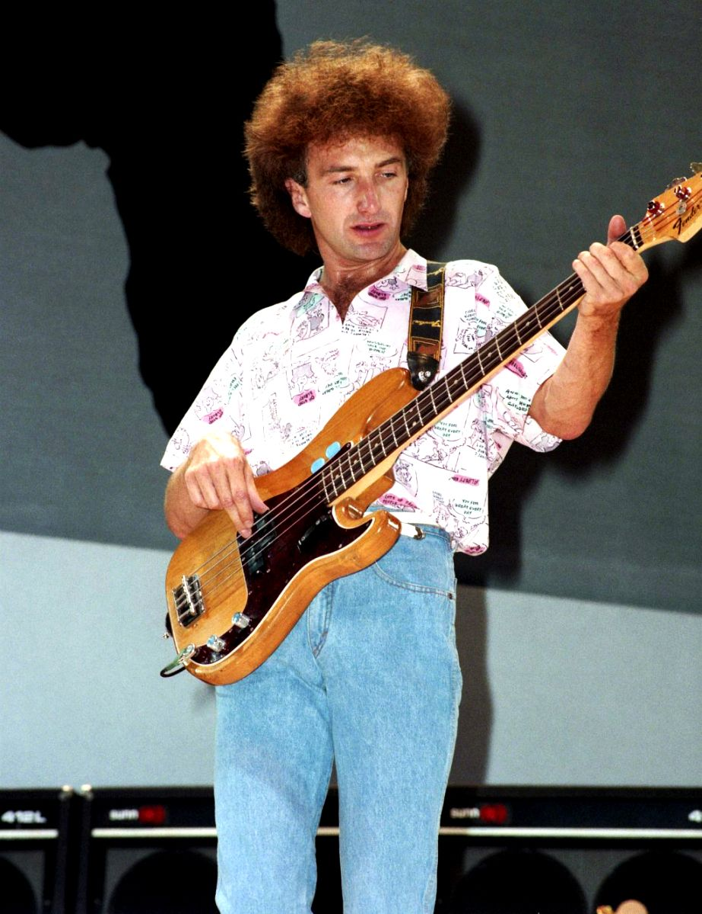

Freddie Mercury
Vocalista e pianista icónico do Queen.

Brian May
Guitarrista principal e compositor da banda.

Roger Taylor
Baterista e vocal de apoio, com estilo energético.

John Deacon
Baixista do Queen.